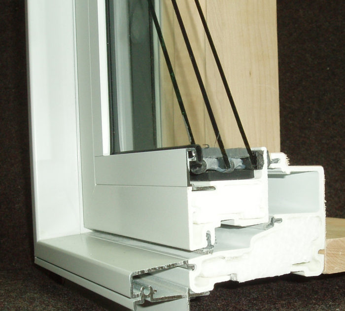
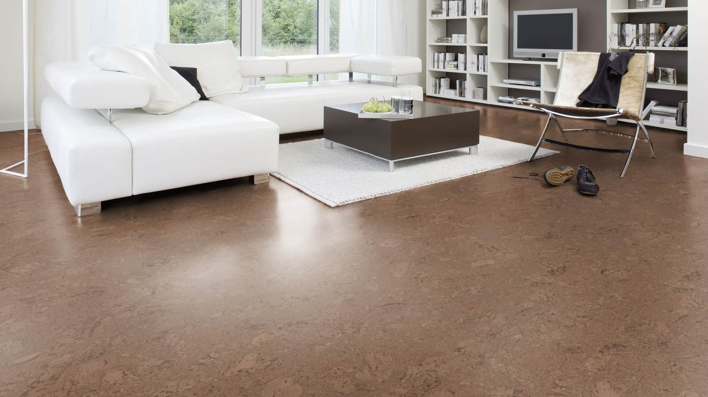
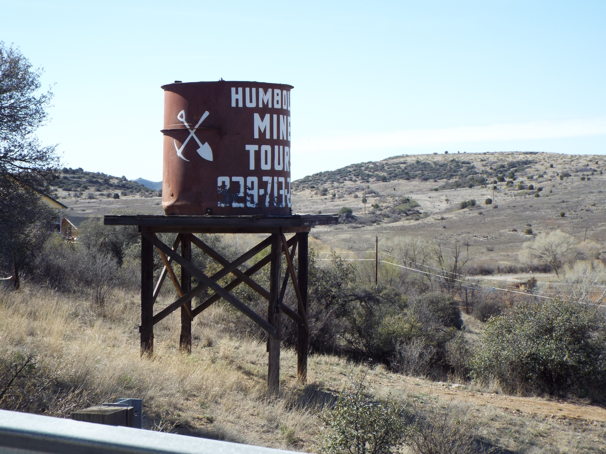

| Our house is designed for a minimal amount of energy consumption as possible, which includes lighting and appliances. We want to include triple layer glass windows (shown right), which only slightly reduce light entry but greatly improves the homes' ability to stay warm or cool against the elements. Some house power would be supplied by small solar panels and small wind turbines to help further reduce the use of unrenewable sourced energy production. |  |
|  | Our house would be constructed mainly from sustainably sourced wood, however, some innovative bio-friendly materials will be incorporated into our designs, for example, cork flooring (pictured left), which is an inexpensive, eco-friendly alternative to laminated hardwood or tile. We also use recycled metal and other materials for the components in which wood would not be suitable. |
| The houses that we are making are full of innovative ideas. We want to incorporate greenhouses into these homes to allow for a high-efficiency garden, powered by an elevated water tower fueled by rain, which utilizes gravity to provide the pressure needed to run without an input of power. Other ideas that may be used for minimal energy consumption include a water heater powered by concentrated sunlight during the day to heat the coils, and electricity to heat the coils at night. |  |